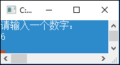
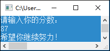

C# if else语句详解
在 C# 中，if 语句是最基础的一种选择结构语句，主要有3种形式，分别为 if 语句、if…else 语句和 if…else if…else 多分支语句。
1. C# if 语句
C# 语言中使用 if 关键字来组成选择语句，其最简单的语法格式如下：
if(表达式)
{
语句块
}
( )括起来，它可以是一个单纯的布尔变量或常量，也可以是关系表达式或逻辑表达式。
- 如果表达式的值为真，则执行语句块，之后继续执行下一条语句；
- 如果表达式的值为假，就跳过语句块直接执行下一条语句。
这种形式的if语句相当于汉语里的“如果……那么……”，其流程图如图1所示。
图1：if 语句流程图
注意，使用 if 语句时，如果只有一条语句，则省略{ }是没有语法错误的，而且不影响程序的执行，但是为了程序代码的可读性，建议不要省略。
示例1：使用 if 语句判断用户输入的数字是不是奇数，代码如下：
static void Main(string[] args)
{
Console.WriteLine("请输入一个数字：");
int iInput = Convert.ToInt32(Console.ReadLine()); //记录用户的输入
if (iInput % 2 != 0) //使用if语句进行判断
{
Console.WriteLine(iInput + " 是一个奇数！");
}
Console.ReadLine();
}
代码注解：
- 第 4 行代码使用 Convert.ToInt32 方法将用户的输入强制转换成了 int 类型，然后使用 int 类型变量记录。
- 一个数为奇数的条件是不能被 2 整除，因此，第 5 行代码判断用户的输入求余 2 的结果是否不等于 0，以此来确定用户的输入是不是奇数。
运行程序，当输入 5 时，运行结果如图2所示；当输入6时，运行结果如图3所示。
图2：奇数的运行结果

图3：不是奇数的运行结果
说明
这段 C# 代码中，if 语句后面如果只有一条语句，可以不使用大括号{ }，例如下面的代码：
if (a > b)
max = a;
但是不建议开发人员使用这种形式，不管 if 语句后面有多少要执行的语句，都建议使用大括号{ }括起来，因为这样方便开发人员阅读代码。
常见错误
1) if 语句后面多加了分号。if 语句的正确表示如下：
if (i == 5)
Console.WriteLine("i的值是5");
上面两行代码的本意是当变量 i 的值为 5 时，执行下面的输出语句。但是，如果在 if 判断语句后面多加了分号，代码如下：
if (i == 5);
Console.WriteLine("i的值是5");
下面的输出语句将会无条件执行，if语句就起不到判断的作用。2) 使用 if 语句时，如果要将多个语句作为复合语句来执行，例如程序的真正意图是如下语句。
if(flag)
{
i++;
j++;
}
但是，如果省略大括号{ }，代码如下。
if(flag)
i++;
j++;
执行程序时，无论 flag 是否为 true，j++ 都会无条件执行。这显然与程序的本意不符，但程序并不会报告异常，因此这种错误很难发现。
2. C# if…else 语句
如果遇到只能二选一的情况，则可以使用 C# 中提供的 if…else 语句来解决，其语法格式如下：
if(表达式)
{
语句块1;
}
else
{
语句块2;
}
这种形式的选择语句相当于汉语里的“如果……否则……”，其流程图如图4所示。
图4：if…else 语句流程图
技巧
if…else 语句可以使用条件运算符进行简化，例如下面的代码：
if(a > 0)
b = a;
else
b = -a;
可以简写成如下代码。
b = a > 0 ? a : -a;
上述代码主要实现求绝对值的功能，如果 a > 0，就把a的值赋给变量b；否则，将 −a 的值赋给变量 b。使用条件运算符的好处是可以使代码简洁，并且有一个返回值。示例2：使用 if…else 语句判断用户输入的分数是否达到优秀，如果大于 90，则表示优秀；否则，输出“希望你继续努力!”，代码如下：
static void Main(string[] args)
{
Console.WriteLine("请输入你的分数：");
int score = Convert.ToInt32(Console.ReadLine());//记录用户的输入
if (score > 90) //判断输入是否大于90
{
Console.WriteLine("你非常优秀！");
}
else //不大于90的情况
{
Console.WriteLine("希望你继续努力！");
}
Console.ReadLine();
}
运行程序，当输入一个大于 90 的数时（如 93），运行结果如图5所示；当输入一个小于 90 的数时（如 87），运行结果如图6所示。图5：输入大于90的数的运行结果

图6：输入小于90的数的运行结果
注意
在使用 else 语句时，else 一定不可以单独使用，它必须和关键字 if 一起使用。例如，下面的代码是错误的：
else
{
max=a;
}
在程序中使用 if…else 语句时，如果出现 if 语句多于 else 语句的情况，将会出现悬垂 else 问题——究竟 else 和哪个 if 相匹配呢？例如下面的代码。
if(x>1)
if(y>x)
y++;
else
x++;
如果遇到上面的情况，记住，在没有特殊处理的情况下，else 永远都与最后出现的 if 语句相匹配，即上面代码中的 else 是与 if(y>x) 语句相匹配的。如果要改变 else 语句的匹配对象，可以使用大括号。例如，将上面代码修改成如下形式。
if(x>1)
{
if(y>x)
y++;
}
else
x++;
这样，else 将与 if(x>1) 语句相匹配。
技巧：建议总是在 if 后面使用大括号{ }将要执行的语句括起来，这样可以避免程序代码混乱。
3. C# if…else if…else 语句
大家平时在网上购物付款时通常都有多种选择，如图7所示。图7：购物时的付款页面
图7中提供了3种付款方式，这时用户就需要从多个选项中选择一个。
在开发程序时，如果遇到多选一的情况，则可以使用 if…else if…else 语句。该语句是一个多分支选择语句，通常表现为“如果满足某个条件，进行某种处理；否则，如果满足另一个条件，则执行另一种处理……”。
if…else if…else 语句的语法格式如下：
if(表达式1)
{
语句1
}
else if(表达式2)
{
语句2
}
else if(表达式3)
{
语句3
}
…
else if(表达式m)
{
语句m
}
else
{
语句n
}
( )括起来。表达式部分可以是一个单纯的布尔变量或常量，也可以是关系表达式或逻辑表达式。
- 如果表达式为真，执行该语句；
- 而如果表达式为假，则跳过该语句，进行下一个 else if 的判断；
- 只有在所有表达式都为假的情况下，才会执行 else 中的语句。
if…else if…else 语句的流程图如图8所示。
图8：if…else if…else 语句的流程图
注意
if 和 else if 都需要判断表达式的真假，而 else 则不需要判断。另外，else if 和 else 都必须跟 if 一起使用，不能单独使用。示例3：使用 if…else if…else 多分支语句实现根据用户输入的年龄输出相应信息提示的功能，代码如下。
static void Main(string[] args)
{
int YouAge = 0; //声明一个int类型的变量YouAge，值为0
Console.WriteLine("请输入您的年龄：");
YouAge = int.Parse(Console.ReadLine()); //获取用户输入的数据
if (YouAge <= 18) //调用if语句判断输入的数据是否小于等于18
{
//如果小于等于18则输出提示信息
Console.WriteLine("您的年龄还小，要努力奋斗哦！");
}
else if (YouAge > 18 && YouAge <= 30) //判断是否大于18岁并小于等于30岁
{
//如果输入的年龄大于18岁并且小于等于30岁则输出提示信息
Console.WriteLine("您现在的阶段正是努力奋斗的黄金阶段！");
}
//判断输入的年龄是否大于30岁并小于等于50岁
else if (YouAge > 30 && YouAge <= 50)
{
//如果输入的年龄大于30岁而小于等于50岁则输出提示信息
Console.WriteLine("您现在的阶段正是人生的黄金阶段！");
}
else
{
Console.WriteLine("最美不过夕阳红！");
}
Console.ReadLine();
}
代码注解：第 5 行代码中的 int.Parse 方法用来将用户的输入强制转换成 int 类型。运行程序，输入一个年龄值，按回车键，即可输出相应的提示信息，效果如图9所示。
图9：if…else if…else 多分支语句的使用
多学两招
使用 if 选择语句时，尽量遵循以下原则。1) 使用 bool 类型变量作为判断条件，假设 flag 为 bool 类型变量，规范的书写如下：
if(flag) //表示为真
if(!flag) //表示为假
if(flag==true)
if(flag==false)
2) 使用浮点类型变量与 0 值进行比较时，规范的书写格式如下：
if(d_value>=-0.00001&&d_value<=0.00001) //这里的0.00001是d_value的精度，d_value是double类型变量
不符合规范的书写格式如下：if(d_value==0.0)
3) 使用 if(1==a) 这样的书写格式可以防止错写成 if(a=1)，以避免逻辑上的错误。
4. C# if 语句的嵌套
前面讲过3种形式的 if 选择语句，这3种形式的选择语句之间都可以进行互相嵌套。例如，在最简单的 if 语句中嵌套 if…else 语句，形式如下：
if(表达式1)
{
if(表达式2)
语句1;
else
语句2;
}
if(表达式1)
{
if(表达式2)
语句1;
else
语句2;
}
else
{
if(表达式3)
语句3;
else
语句4;
}
说明
if 选择语句可以有多种嵌套方式。在开发程序时，可以根据自身需要选择合适的嵌套方式，但一定要注意逻辑关系的正确处理。示例4：使用嵌套的 if 语句实现判断用户输入的年份是不是闰年的功能，代码如下。
static void Main(string[] args)
{
Console.WriteLine("请输入一个年份：");
int iYear = Convert.ToInt32(Console.ReadLine()); //记录用户输入的年份
if (iYear % 4 == 0) //四年一闰
{
if (iYear % 100 == 0)
{
if (iYear % 400 == 0) //四百年再闰
{
Console.WriteLine("这是闰年");
}
else //百年不闰
{
Console.WriteLine("这不是闰年");
}
}
else
{
Console.WriteLine("这是闰年");
}
}
else
{
Console.WriteLine("这不是闰年");
}
Console.ReadLine();
}
代码注解判断闰年的方法是“四年一闰，百年不闰，四百年再闰”。程序使用嵌套的 if 语句对这 3 个条件逐一判断，第 5 行代码判断年份能否被 4 整除：
- 如果不能整除，输出字符串“这不是闰年”；
-
如果能整除，第 7 行代码继续判断能否被 100 整除；
- 如果不能整除，输出字符串“这是闰年”；
-
如果能整除，第 9 行代码继续判断能否被 400 整除；
- 如果能整除，输出字符串“这是闰年”；
- 如果不能整除，输出字符串“这不是闰年”。
运行程序，当输入一个闰年年份时（如 2000），运行结果如图10所示；当输入一个非闰年年份时（如2017），运行结果如图11所示。
图10：输入闰年年份的结果

图11：输入非闰年年份的结果
几点说明：
- 使用 if 语句嵌套时，注意 else 关键字要和 if 关键字成对出现，并且遵守邻近原则，即 else 关键字总是和自己最近的 if 语句相匹配。
- 在进行条件判断时，应尽量使用复合语句，以免产生二义性，导致运行结果和预想的不一致。
关注公众号「站长严长生」，在手机上阅读所有教程，随时随地都能学习。内含一款搜索神器，免费下载全网书籍和视频。

微信扫码关注公众号